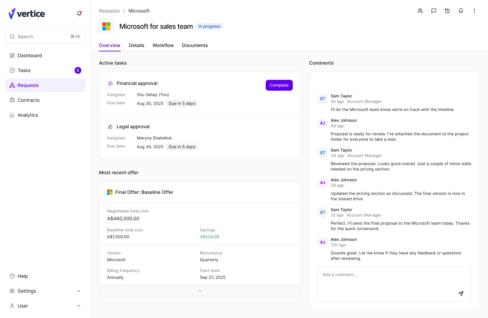
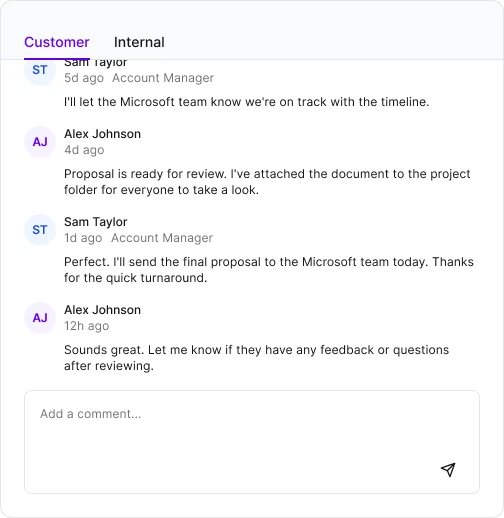

August – November 2025
Vertice
About
Vertice helps companies buy and renew their software at the best price, saving them millions. The platform sits on two objects: contracts, and requests to buy something new. The request page carries both renewals and brand new software requests through the workflow, which makes it the page most people spend their day in. I led its redesign, from discovery through to shipping.
Outcome
CSAT rose 32%, the time to complete a request fell 27%, and task completion improved by 41%. Internal teams moved faster with clearer ownership and less back and forth. External users could finally see where their request had got to, which cut the support tickets asking exactly that.


Problem
The original page led with the workflow canvas: a diagram of the whole process that filled the screen and pushed the actual work below the fold. Whatever you had come to do, approve a task, read the latest offer, answer a question, you scrolled past the map to reach it. It served renewals and new requests equally badly, and it was putting platform adoption and CSAT at risk.

Research
I picked the initiative up in my second week and started by interviewing dozens of people on both sides of it: procurement, legal and finance inside customer teams, and Customer Success, Sales and Data inside ours. Product and Engineering helped me size what came back.
The clearest finding was that this is not one page. It carries a brand new process, a generic request, a request with a vendor attached, and a renewal, and each one arrives with different expectations of the header, the tabs and the breadcrumb. I drew all four out and designed against the set rather than against a single happy path.

Product System
I audited the existing UI first, and found the same idea drawn several different ways: every offer and contract card in the product had its own headings, borders, collapsed state and preview. I pulled them onto one identity and built the widget as a flexible component, so the request page and the rest of the platform now assemble from the same blocks. Usage guidelines went out with it, so designers and engineers could keep building from it without coming back to ask.

Task cards were worked through against the workflow sitting behind them: what is active, what is overdue, and what the reader is meant to do next. Comments were tried as an overlay and as a resizable panel, at both screen sizes and both comment volumes, before we committed to one.


Role
I took ownership of the initiative within two weeks of joining, and ran it with 3 Product Managers and 3 engineering squads alongside Customer Success, Sales and Data. Defining the problem and agreeing what success looked like came first, so we were all measuring the same thing by the time anything was drawn.
We were time constrained and the redesign had to reach users in pieces rather than all at once, so I broke it into milestones. The first was the page header and the layout, the frame everything else sits in. Settling the structure early meant engineering could start building while the individual components were still being designed, and each one then dropped into a page that already held its shape.

Learnings
Every decision started from what the user was trying to get done, then had to survive what was buildable in the time we had. Where the ideal pattern was not shippable, the job was to find the version that kept the goal intact and could still go out.
Agreeing the frame before the furniture is the part I would reach for again first. It kept three squads moving in parallel, and it meant no component was ever designed in isolation from the page it had to live in. Next is the contract page, extending the same patterns so the two halves of the product finally match.